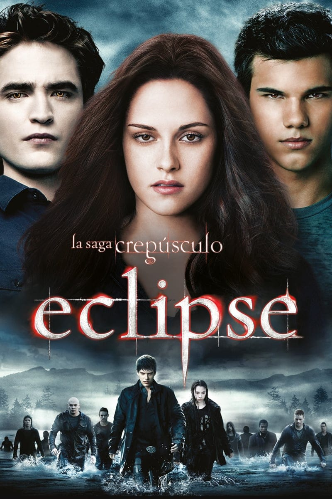
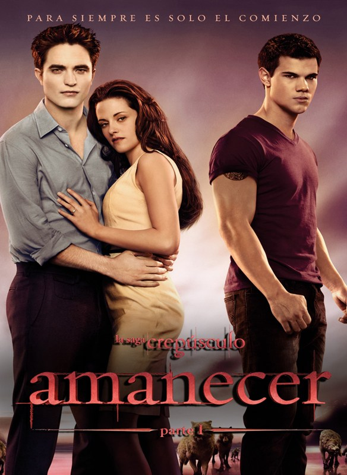
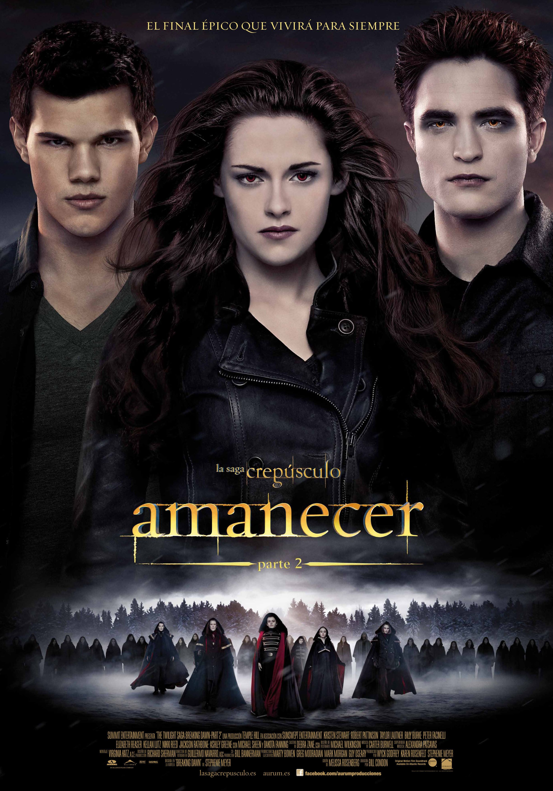

Bella Swan se muda desde Phoenix, Arizona, a la pequeña y lluviosa ciudad de Forks, Washington, para vivir con su padre, Charlie. En su nuevo instituto conoce a Edward Cullen, un chico misterioso, atractivo y reservado que parece sentir una mezcla de atracción y repulsión por ella. Pronto Bella nota comportamientos extraños en él y su familia: no comen, no se exponen al sol, tienen una fuerza y velocidad sobrehumanas, y viven aislados del resto.
Después de investigar y observar, Bella descubre la verdad: Edward es un vampiro. A pesar del peligro que implica su naturaleza, ambos se enamoran profundamente. Edward pertenece a una familia de vampiros “vegetarianos”, los Cullen, que solo beben sangre animal para evitar dañar a los humanos. Sin embargo, su relación se complica cuando llegan a Forks tres vampiros nómadas: James, Laurent y Victoria. James, un vampiro rastreador, queda obsesionado con Bella y decide cazarla por puro placer.
Los Cullen hacen todo lo posible por protegerla. Finalmente, James logra engañarla y la ataca en una antigua sala de ballet. Edward llega a tiempo para salvarla y, luchando contra su deseo de beber su sangre, logra detener el veneno que comenzaba a convertirla en vampira. Al final, Bella le pide a Edward que la transforme para estar juntos para siempre, pero él se niega, convencido de que está protegiendo su alma.
Eclipse

Bella se encuentra en medio de una decisión complicada: elegir entre su amor por Edward o su fuerte conexión con Jacob Black, su mejor amigo y ahora rival de Edward. Jacob ha cambiado: es un hombre lobo, parte de una antigua tribu que protege a los humanos de los vampiros. Aunque Edward y Jacob se odian por naturaleza, ambos quieren lo mejor para Bella.
Mientras tanto, Victoria, que busca vengar la muerte de James, organiza un ejército de vampiros neófitos (recién transformados y extremadamente fuertes) en Seattle, con la intención de atacar y matar a Bella. Esta amenaza obliga a los Cullen y a los hombres lobo a formar una alianza, algo que nunca había ocurrido, para enfrentarse juntos al nuevo peligro.
Durante este tiempo, Bella se cuestiona el tipo de vida que quiere: humana, envejeciendo y con una vida “normal”, o inmortal al lado de Edward. Aunque tiene sentimientos por Jacob, finalmente elige a Edward, reafirma su decisión de ser vampira y acepta su propuesta de matrimonio.
En la batalla final, los Cullen y los lobos derrotan al ejército de neófitos. Edward mata a Victoria y Bella se despide emocionalmente de Jacob. La película cierra con la planificación de su boda y la determinación de Bella de unirse al mundo de los vampiros.
Luna Nueva
Después de que Bella Swan se corta en la casa de los Cullen y Jasper casi la ataca, Edward decide que estar con ella es demasiado peligroso y la deja, haciéndola creer que ya no la ama. Bella entra en una profunda depresión y se aísla por meses, hasta que descubre que al exponerse al peligro puede “ver” visiones de Edward. Esto la lleva a hacer cosas arriesgadas, como andar en motocicleta y saltar desde un acantilado.
Durante este tiempo, Bella se acerca a Jacob Black, quien se convierte en su mejor amigo y la ayuda a sanar. Sin embargo, Jacob comienza a cambiar y finalmente revela que es un hombre lobo, parte de una tribu que protege la región de los vampiros. A pesar de su vínculo, Jacob y su manada advierten a Bella sobre los peligros de los vampiros, especialmente cuando la vampira Victoria regresa para vengarse de la muerte de James.
Mientras tanto, Edward cree erróneamente que Bella ha muerto después de verla saltar desde un acantilado. Desesperado, viaja a Volterra, Italia, para pedir a los Vulturi que lo maten. Bella y Alice viajan apresuradamente para detenerlo y llegan justo a tiempo. Aro, el líder de los Vulturi, descubre que Bella conoce el mundo de los vampiros y decide que debe convertirse en uno en el futuro.
Edward y Bella regresan a Forks, y él le promete que nunca la dejará de nuevo. La película termina con Edward proponiéndole matrimonio a Bella, dejando la decisión en sus manos.
Crepusculo Amanecer parte 1

Bella y Edward finalmente se casan en una ceremonia íntima en la casa de los Cullen. Luego viajan a una isla brasileña para su luna de miel. Allí, Bella queda embarazada inesperadamente, algo que nadie creía posible entre un vampiro y una humana. El embarazo avanza rápidamente y debilita a Bella, ya que el bebé tiene una fuerza sobrenatural y se desarrolla a gran velocidad.
El feto comienza a romper sus huesos desde dentro y a absorber todos sus nutrientes, lo que pone a Bella en peligro de muerte. Mientras los Cullen se dividen sobre qué hacer, Bella se mantiene firme en su decisión de tener al bebé. Jacob, aunque furioso, se separa de su manada para protegerla.
Finalmente, Bella da a luz en un parto doloroso y crítico. En el proceso, muere brevemente, pero Edward logra revivirla al inyectarle veneno de vampiro, lo que inicia su transformación. El bebé, una niña llamada Renesmee, nace sana. Jacob, al verla, queda “imprimado”, es decir, se establece un lazo irrompible con ella.
La película termina con Bella abriendo los ojos por primera vez como vampira, marcando el comienzo de una nueva etapa.
Crepusculo Amanecer parte 2

ahora convertida en vampira, Bella descubre que posee un don especial: puede crear un escudo mental que protege a otros de ataques psíquicos. Se adapta rápidamente a su nueva vida, al control de su sed y a su nueva fuerza. Renesmee crece a una velocidad increíble, y todos se dan cuenta de que no es una niña común.
Cuando Irina, una vampira del clan Denali, ve a Renesmee, cree que es una “niña inmortal”, lo cual está estrictamente prohibido en el mundo vampírico porque representa un gran peligro. Irina informa a los Vulturi, la élite que gobierna sobre todos los vampiros, y ellos se preparan para castigar a los Cullen.
Ante esta amenaza, la familia Cullen viaja por todo el mundo buscando testigos que puedan probar que Renesmee no fue transformada, sino que nació de una humana y un vampiro. Reúnen aliados de distintos clanes y culturas para presentar pruebas ante los Vulturi.
Cuando ambos grupos se enfrentan en un campo nevado, se produce una intensa tensión. Alice Cullen, con su don de ver el futuro, muestra una visión de lo que ocurrirá si los Vulturi deciden luchar: una batalla sangrienta en la que muchos morirán, incluidos líderes de ambos bandos. Esta visión cambia la decisión de los Vulturi, quienes se retiran tras descubrir también que Renesmee no es una amenaza.
La saga concluye con Bella y Edward viviendo en paz con su hija, rodeados de su familia y amigos,con la promesa de una eternidad juntos. Bella le muestra a Edward, por primera vez, todos sus pensamientos
y recuerdos,usando su don para compartir su mente, sellando su amor eterno.